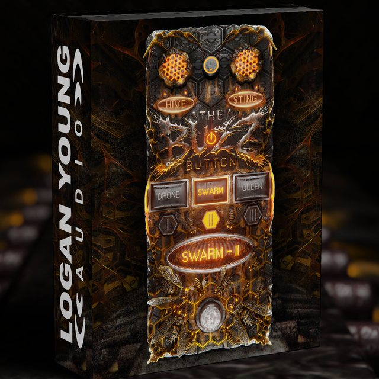
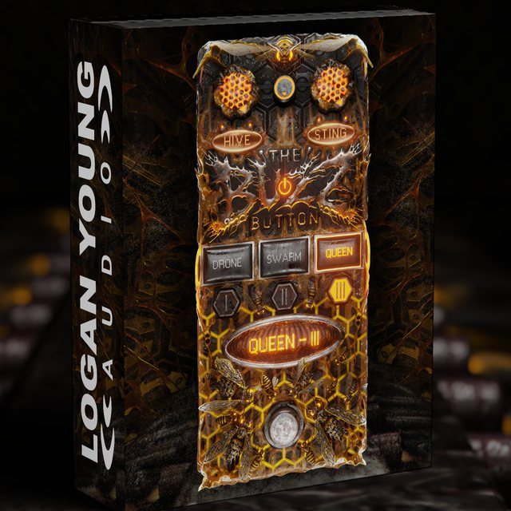

The Buzz Button is a three-mode fuzz built to blend a crushing low octave straight into your guitar tone — for modern metal, djent, and anything that needs to sound bigger.
Three internal routings change how your dry signal, octave, and fuzz interact — from clean and controlled to completely unhinged.
Drop it anywhere in your chain and dial in Hive, Sting, and Gate until your tone turns into something else entirely.
Activation Policy: Each purchase of The Buzz Button includes 2 device activations. These are for non-simultaneous use by a single user (e.g. desktop and laptop).
VST | AU | AAX
MacOS 10.13+ | Windows 10+
2 Activations
License type: One-time purchase
Purchase NowDrop it anywhere in your chain
Pick a mode (Drone / Swarm / Queen)
Dial in HIVE, STING & GATE until it swarms
The all-purpose fuzz. Thick, aggressive, and usable across everything from riffs and chords to leads and breakdowns.

Darker, meaner, more aggressive. A heavier fuzz character built for riffs that need extra bite and weight.

Maximum aggression. Saturated, chaotic, and intentionally over-the-top when you want your tone to completely lose its mind.
Three internal routing modes change how your dry guitar, low octave, and fuzz interact.
Guitar and octave are processed independently before being blended — a clear, controlled fuzz with plenty of low-end weight.
Guitar and octave are blended together before hitting the fuzz, creating a more unified, compressed fuzz character.
Guitar and octave are fuzzed independently at reduced drive, blended, then pushed through a second fuzz stage for extra saturation and chaos.
Hive Knob = Fuzz Amount
Controls the amount of fuzz saturation applied to your signal. Turning up HIVE pushes the circuit harder, adding thickness, grit, and harmonic buzz.
Sting Knob = Low Octave Blend
Blends a crushing low octave into your dry signal. Lower settings keep things tight and controlled, while higher settings add massive low-end weight.
Gate Knob = Noise Gate
Cleans up the fuzz's noise floor, cutting the signal when you're not playing — for tight, controlled silence between hits.
Purchase now